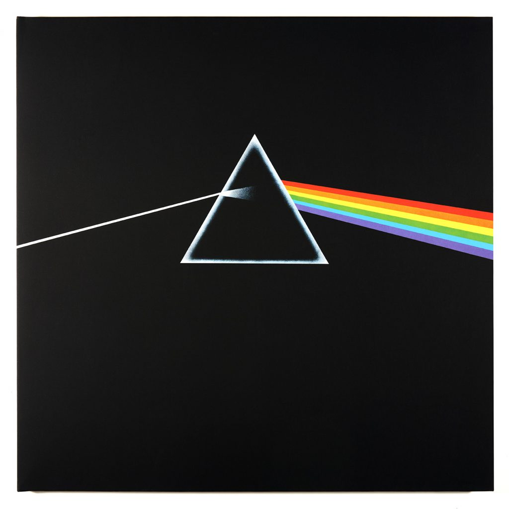

Pink Floyd
Best Pink Floyd albums
Dark Side of the Moon

The Wall
The Wall is the eleventh studio album by the English progressive rock band Pink Floyd, released on 30 November 1979
by Harvest/EMI and Columbia/CBS Records. It is a rock opera that explores Pink, a jaded rock star whose eventual
self-imposed isolation from society forms a figurative wall.

Wish You Were Here

Animals